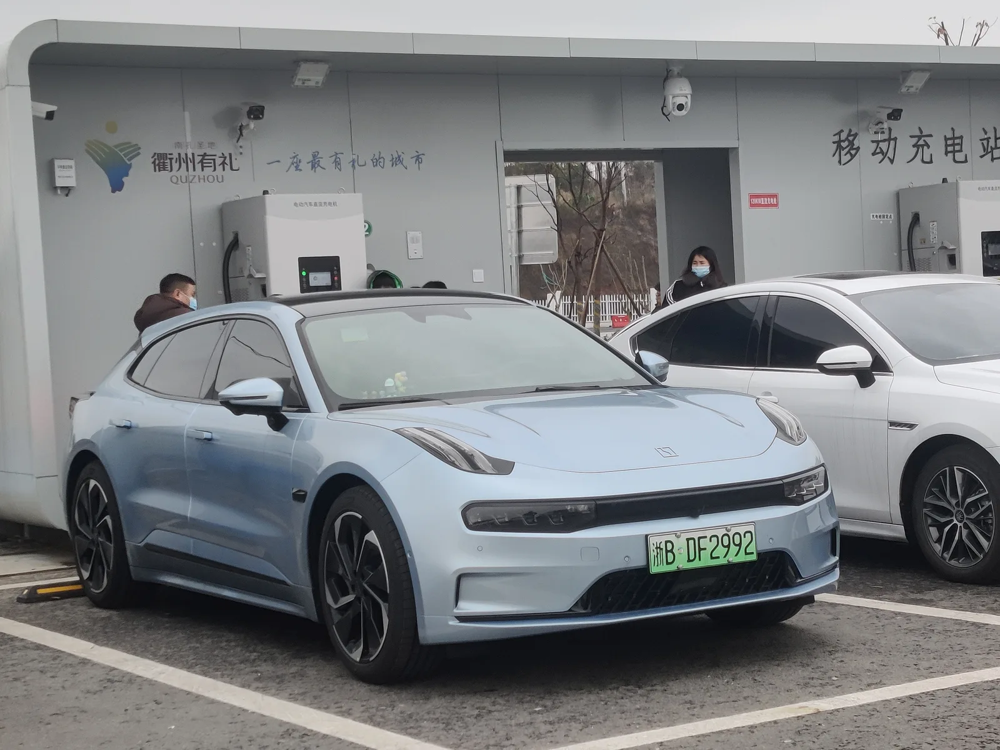
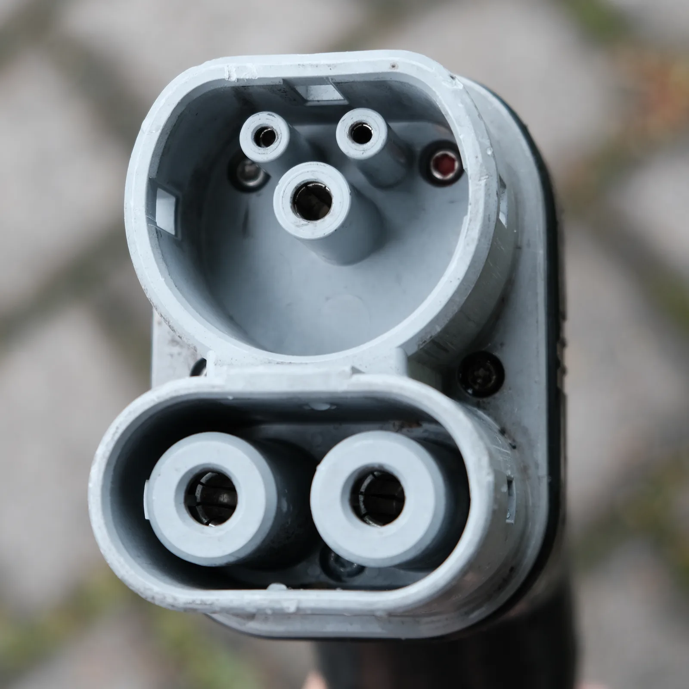
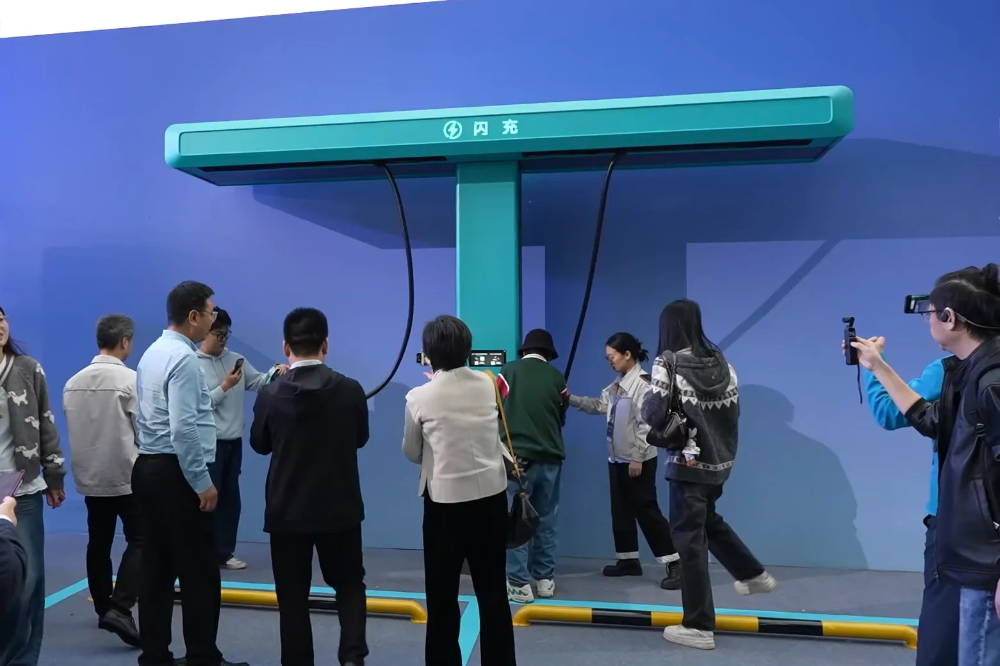
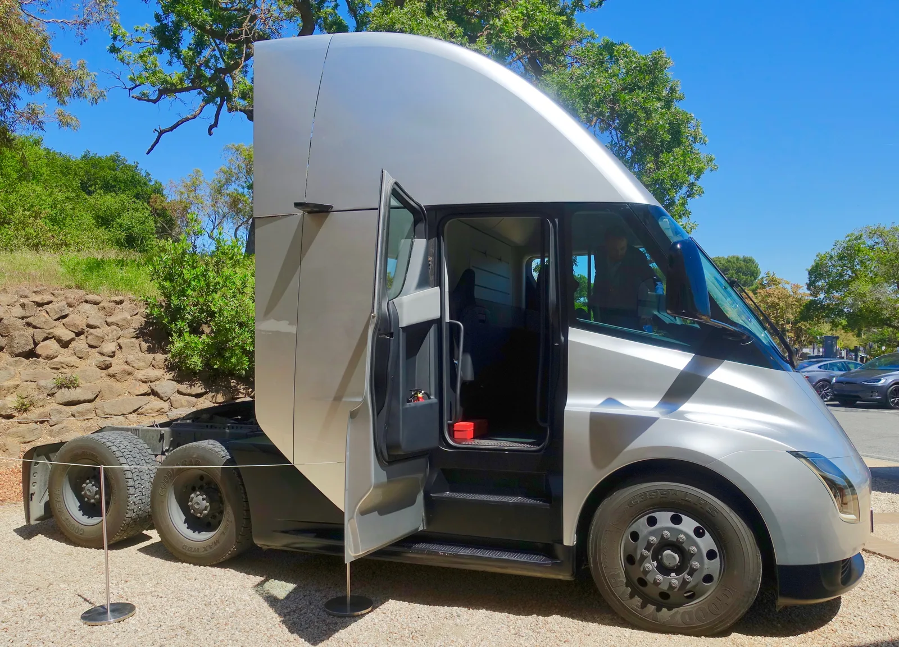

▲ 지리 계열은 차량뿐 아니라 충전 인프라 구축을 함께 진행해 왔다. 이번엔 그 충전기 자체의 출력을 끌어올렸다 ⓒ Wikimedia Commons (Quzhouliulian, CC BY-SA 4.0)
지리자동차그룹이 이번엔 차가 아니라 충전기 얘기를 꺼냈다. 오토헤럴드 등에 따르면 지리는 9월 23일 중국 닝보의 글로벌 세이프티 센터에서 최대 2.2MW(2,200kW) 출력의 차세대 초고속 충전기를 공개할 예정이다.
지난 8월 지리가 발표한 1000V 고전압 아키텍처가 배터리·모터·배선·차체까지 아우르는 차량 쪽 설계 변경이었다면, 이번 2.2MW 충전기는 충전기 하드웨어 자체의 출력 스펙 경쟁이다. 같은 '지리발(發) 충전 속도 뉴스'처럼 보이지만, 겨냥하는 대상이 다르다.
1. 무엇을 공개하나 — 2.2MW 충전기의 스펙
오토헤럴드 보도에 따르면 지리는 9월 23일 닝보 세이프티 센터에서 신형 배터리와 충전 시스템을 함께 선보인다. 핵심은 최대 2.2MW 출력의 초고속 충전기다.
해외 매체 Electrek도 이 발표를 다루며, 지리의 2.2MW 시스템이 BYD의 최신 '플래시 차징 2.0'(1.5MW)보다 약 50% 높은 출력이라고 전했다. 골든 브릭 배터리와 조합하면 4분 벽을 넘는 충전이 가능할 것으로 예고됐다. 이미 지리는 같은 배터리로 4분 22초 충전 기록을 낸 바 있다.
| 항목 | 내용 |
|---|---|
| 공개 일정 | 2026년 9월 23일, 중국 닝보 지리 글로벌 세이프티 센터 |
| 최대 출력 | 2.2MW(2,200kW) |
| 조합 배터리 | 골든 브릭 배터리(4분 22초 충전 실측 이력) |
| 부가 기술 | AI 스마트 충전 알고리즘 — 배터리 온도 제어, 3,500회 충·방전 수명 주장 |
| 미공개 사항 | 정확한 충전 구간(예: 10~80%) 수치, 대응 차종, 상용화 시점 |
📍 '4분 충전'을 곧이곧대로 읽으면 안 되는 이유
해외 매체들은 이번 발표에서 정확히 몇 %에서 몇 %까지 4분이 걸리는지는 아직 공개되지 않았다는 점을 지적한다. 충전 시간은 시작·종료 잔량 구간에 따라 크게 달라지므로, 실제 수치는 9월 23일 발표 이후 확인이 필요하다.
이번 소식을 처음 전한 오토헤럴드 기사 원문은 아래에서 확인할 수 있다. 오토헤럴드 기사 바로가기
2. 8월의 '1000V 아키텍처'와는 다른 이야기다
지리를 둘러싼 초고속 충전 뉴스는 이번이 처음이 아니다. 지난 8월 29일 지리는 10~80% 충전 5분 30초 이하를 목표로 한 1000V 고전압 아키텍처 개발을 발표한 바 있다. 두 소식이 비슷해 보이지만, 초점이 서로 다르다.
✅ 두 발표의 차이 — 차량 아키텍처 vs 충전기 하드웨어
· 8월 발표(1000V 아키텍처): 배터리·전기모터·전력제어장치·배선은 물론 차체 설계까지 고전압 부품과 시스템을 표준화하는 '차량 쪽' 설계 변경. 실측 사례는 링크앤코 10(10~80% 5분 32초)
· 9월 발표(2.2MW 충전기): 충전기 하드웨어 자체의 최대 출력을 2.2MW까지 끌어올리는 '인프라 쪽' 스펙 경쟁. 골든 브릭 배터리와 조합해 4분대를 노림
· 다시 말해 1000V는 차가 얼마나 높은 전압·전류를 받아낼 수 있느냐의 문제이고, 2.2MW는 그 전력을 실제로 밀어 넣는 충전기 쪽 출력 상한의 문제다.

▲ 충전 출력이 메가와트급으로 오르면 커넥터와 케이블이 감당해야 하는 전류·발열 부담도 함께 커진다 ⓒ Wikimedia Commons (Danilo Bargen, CC BY-SA 4.0)
8월 발표된 지리의 1000V 아키텍처 기사는 카프리즘에서 별도로 다뤘다. 지리 1000V 아키텍처 기사 바로가기
즉 지리는 두 달 사이 '차'와 '충전기' 양쪽에서 각각 발표를 내놓은 셈이다. 차량 아키텍처가 전력을 받아낼 그릇을 키우는 작업이라면, 충전기 출력은 그 그릇에 실제로 부어 넣는 물줄기를 굵게 만드는 작업에 가깝다.
3. 자릿수가 다른 충전 출력 — BYD·테슬라·현대와 비교
2.2MW라는 숫자가 얼마나 큰지는 다른 회사들의 충전기와 나란히 놓아 보면 분명해진다.

▲ BYD가 공개한 1.5MW급 '플래시 차징' 시연 장비. 지리의 2.2MW는 이보다 약 50% 높은 출력을 예고했다 ⓒ Wikimedia Commons (中国新闻社, CC BY 3.0)
| 충전기 | 최대 출력 | 비고 |
|---|---|---|
| 지리 2.2MW 충전기(2026.9 공개 예고) | 2,200kW | 골든 브릭 배터리 조합 시 4분대 목표 |
| BYD 플래시 차징 2.0 | 1,500kW | 약 5분 충전, 초급속 충전 중 배터리 76°C 발열 보고 |
| 테슬라 메가차저(세미 트럭용) | 1,200kW | 승용차가 아닌 대형 화물차용으로 설계 |
| 지커(지리 계열) 1500kW급 충전기 | 1,500kW | 2026년 3월 기준 2,100기 이상 설치 |
| 현대차그룹 E-pit | 350kW | 400V·800V 멀티 급속 충전 지원 |
| 국내 일반 급속충전기 | 50~100kW급 | 가장 흔한 공용 충전 인프라 사양 |

▲ 테슬라의 1.2MW급 메가차저는 승용 전기차가 아니라 세미 트럭 전용으로 설계됐다. 배터리 용량 자체가 훨씬 크다 ⓒ Wikimedia Commons (Steve Jurvetson, CC BY 2.0)
여기서 짚어야 할 점은 '용도'가 다르다는 것이다. 테슬라의 1.2MW 메가차저는 승용 전기차가 아니라 대형 화물차인 세미 트럭용으로 설계됐다. 배터리 용량 자체가 수백 kWh~1MWh급으로 승용차와는 비교가 안 될 만큼 크다. 반면 지리의 2.2MW는 일반 승용 전기차를 대상으로 한다는 점에서, 단순 출력 비교 이상의 의미가 있다.
현대차그룹 E-pit(350kW)이나 국내 공용 급속충전기(50~100kW급)와 비교하면 격차는 더 크게 벌어진다. 지리·BYD·지커 등 중국 업체들이 형성한 메가와트급 충전 경쟁은, 아직 그 자릿수에 도달하지 못한 시장과는 이미 다른 리그에서 벌어지고 있다.
4. 출력을 올릴수록 커지는 숙제 — 배터리 발열
충전 출력이 메가와트 단위로 올라갈수록 함께 커지는 문제가 있다. 바로 배터리와 케이블의 발열이다. 전력은 전압과 전류의 곱이므로, 출력을 높이려면 전압을 올리거나 전류를 늘려야 하는데 전류가 커질수록 발열은 제곱으로 증가한다.
📍 BYD가 먼저 겪은 발열 논란
스타뉴스 보도에 따르면 BYD의 메가와트급 플래시 충전 테스트에서 배터리 표면 온도가 76.42°C까지 오른 사례가 확인됐다. 리튬이온 배터리의 최적 작동 온도(15~35°C)는 물론, 중국의 급속충전 배터리 기준(GB/T 44500-2024, 65°C)도 넘어선 수치다. 업계에서는 "5분 충전의 편의성을 위해 배터리 수명을 희생하는 것 아니냐"는 우려가 제기됐다.
지리가 이번 발표에서 'AI 스마트 충전 알고리즘'과 '3,500회 충·방전 수명'을 함께 내세운 것도 이 지점과 무관하지 않다. 출력만 높이면 반쪽짜리 발표가 된다는 걸 경쟁사 사례에서 확인한 셈이다. 다만 AI 알고리즘이 실제로 76°C에 육박하는 발열을 얼마나 억제하는지는, 3자 검증이 아닌 자체 발표 수치라는 한계가 있다.
✅ 메가와트급 충전이 넘어야 할 기술적 과제
· 배터리 셀 발열 — 급속 충전 시 국소적 열 축적으로 고체 전해질 계면층이 손상돼 용량 감소·수명 저하 가속 우려
· 케이블·커넥터 발열 — 대전류를 감당하려면 액체냉각 케이블 등 추가 냉각 설비 필요, 미적용 시 출력 제한
· 충전기-차량 통신·전력제어 — 1000V급 고전압 시스템과 충전기 출력이 어긋나면 실제 수전 출력이 스펙보다 크게 낮아질 수 있음(지리 1000V 기사에서 확인된 링크앤코 10의 충전소별 편차 430kW~1100kW가 사례)
· 3자 검증 부재 — 4분대 충전, 3,500회 수명 등은 현재 제조사 자체 발표 수치로, 독립 기관의 검증은 아직 이뤄지지 않음
5. 요약 — 숫자보다 봐야 할 것
지리가 9월 23일 공개를 예고한 2.2MW 충전기는, 지난 8월의 1000V 차량 아키텍처와는 다른 층위의 발표다. 하나가 차가 전력을 받아내는 능력을 키우는 이야기라면, 다른 하나는 그 전력을 실제로 밀어 넣는 충전기 자체의 출력을 끌어올리는 이야기다.
BYD(1.5MW)·테슬라 세미용 메가차저(1.2MW)와 비교해도 2.2MW는 눈에 띄는 수치이지만, 정확한 충전 구간과 대응 차종은 아직 공개되지 않았다. 또한 BYD가 먼저 겪은 76°C 발열 사례가 보여주듯, 출력 경쟁이 배터리 수명·안전성 문제와 함께 가는지는 9월 23일 공식 발표 이후 세부 사양이 나와야 판단할 수 있다.
국내 소비자 입장에서는 숫자 자체보다, 이 충전 인프라가 실제로 자국 밖까지 확장될지, 그리고 국내 공용 급속충전기(50~100kW급)와의 격차가 어떻게 좁혀질지가 더 현실적인 관전 포인트다.